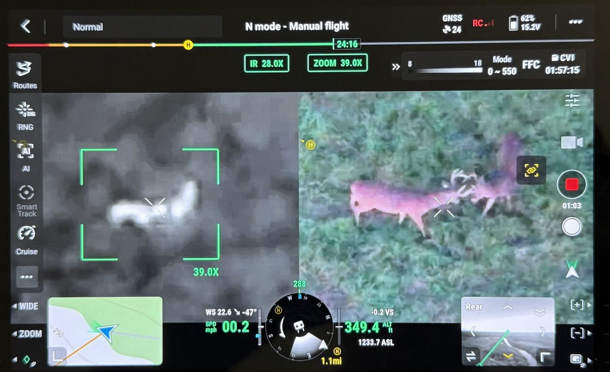
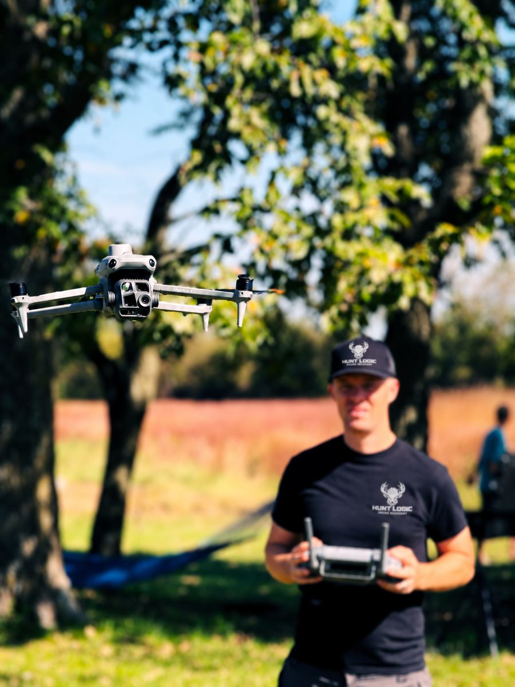
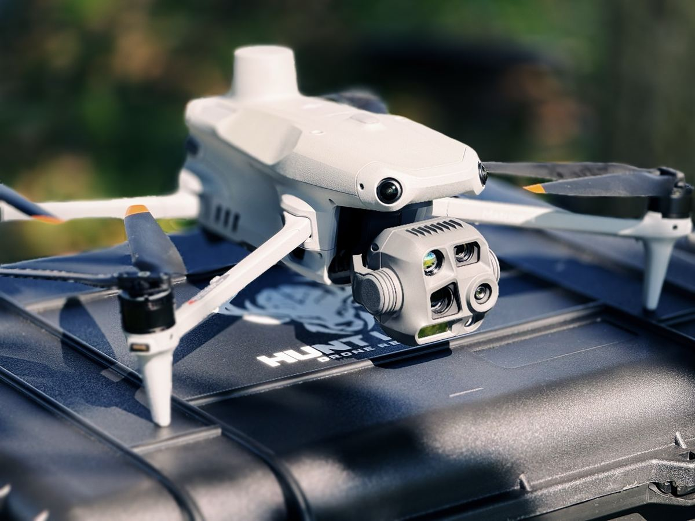
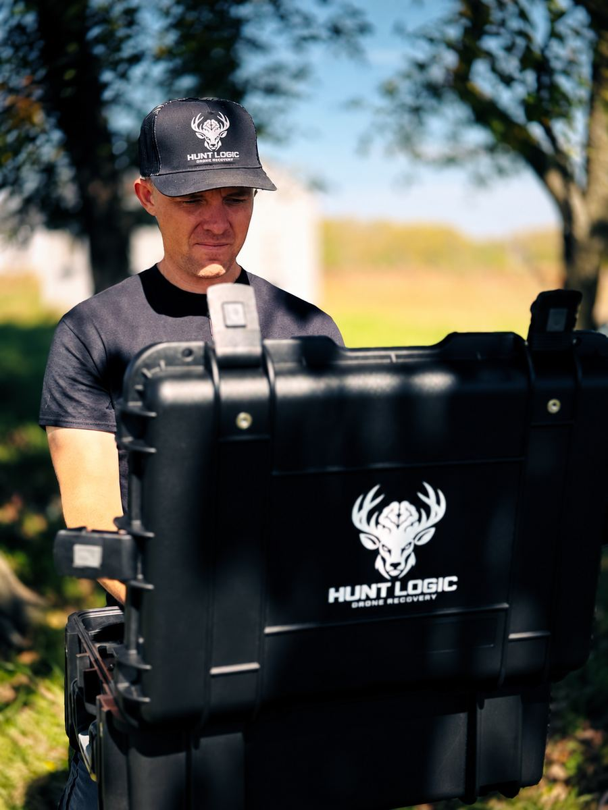

How it works
Wait and mark
Follow your normal wait time. Mark where the deer was hit and where you last saw it.
Call or text
Tell us the county, when you shot, and whether you have the landowner's OK.
We fly the area
The thermal camera picks up body heat through cover, corn, CRP and timber, even at night.
Walk to your deer
We guide you in by phone or radio. No grid search, no bumping the deer.

What the drone sees
A deer's body heat shows up white on thermal, even through cover and in full dark. The zoom camera then confirms it's your deer before you walk in.
We stay high and quiet, so a wounded deer stays bedded instead of getting pushed.

Your pilot
Local to Pattonsburg and a hunter myself. I know the sick feeling of a deer that runs off at last light, and I'd rather help you find it tonight than have you grid-search all morning.
- FAA Part 107 certified commercial drone pilot
- Flying drones professionally, full time, since 2012
- DJI Matrice 4T: thermal camera, 112× hybrid zoom and a laser rangefinder


Drone vs. tracking dog
Missouri hunters have two good options when a deer runs off: a thermal drone or a blood tracking dog. They're good at different things, and they work well together.
Thermal drone
- Covers open ground, CRP, crop fields and open timber fast from above
- Doesn't push the deer: we stay high and quiet, so a bedded deer stays bedded
- Works at night, when the cool ground makes body heat stand out
- Doesn't need a blood trail to work
Deer tracking dog
- Excels on a cold blood trail, hours or even a day old
- Works under thick canopy and cedar, where thermal can't see through
- Follows the deer's exact path, even with little visible blood
- Best when the trail matters more than the view from above
Not sure which one you need? Call us and describe the hit and the cover. If thick canopy makes a blood tracking dog the better choice, we'll tell you so. On some recoveries, a dog on the trail and a drone overhead is the best combination.
Areas we serve
Home base is Pattonsburg in Daviess County. We cover Daviess, Harrison, Gentry, DeKalb, Worth, Grundy, Mercer, Clinton, Caldwell, Nodaway and Livingston counties.
Other thermal searches
The same thermal drone and pilot, for more than deer.
Where we fly
Based in Pattonsburg. We cover Daviess, Harrison, Gentry, DeKalb, Caldwell, Livingston, Grundy, Worth, Mercer, Nodaway and Clinton counties.
Including Pattonsburg, Gallatin, Jamesport, Bethany, Albany, King City, Stanberry, Maysville, Cameron, Hamilton, Chillicothe, Trenton, Princeton, Grant City and Maryville. Farther out? Call and ask.
Missouri rules
- Drones may locate and recover wounded deer, turkey, elk and bear, never chase or harass game.
- Landowner permission first. Conservation areas need a conservation agent's OK.
- No weapons in the party while the drone is up, except a concealed handgun. Leave the bow or rifle at the truck.
Questions
Is it legal to recover a deer with a drone in Missouri?
Yes, since September 2024, as long as you follow the rules above: landowner permission, and no weapons in the party while we fly.
How much does it cost?
We quote each recovery by distance and terrain. Call or text (816) 343-8512 with your county and time of shot for a price before we head out.
When should I call?
As soon as your wait time is up, or right away if you're unsure of the hit. Cooler temperatures and darkness make thermal work best, so night calls are welcome.
What if the deer isn't dead?
We locate it from a distance and tell you where it's bedded, so you can plan the follow-up without pushing it.
Do you guarantee a find?
No one honestly can. A thermal drone finds deer that dogs and grid searches miss, but heavy canopy and a poor hit can still beat any method.
Is there drone deer recovery near me in north Missouri?
Yes. We're based in Pattonsburg and cover Daviess, Harrison, Gentry, DeKalb, Worth, Grundy, Mercer, Clinton, Caldwell, Nodaway and Livingston counties, including Gallatin, Bethany, Cameron, Chillicothe, Trenton and Maryville. Call or text (816) 343-8512, day or night.
Drone or tracking dog: which should I call?
It depends on the ground and the trail. A thermal drone covers open ground, CRP, crop fields and open timber fast from above without pushing the deer. A good blood tracking dog excels on a cold trail under thick canopy where a drone can't see. They complement each other, and on a tough recovery you may want both.
Do you search for anything besides deer?
Yes. The same thermal drone searches for lost or escaped livestock and for lost hunting dogs and pets.
What drone do you use?
A DJI Matrice 4T thermal drone, flown by an FAA Part 107 certified pilot who has flown drones professionally, full time, since 2012.
Save our number before you hunt
When a deer runs off at last light, you won't want to be searching for a phone number.